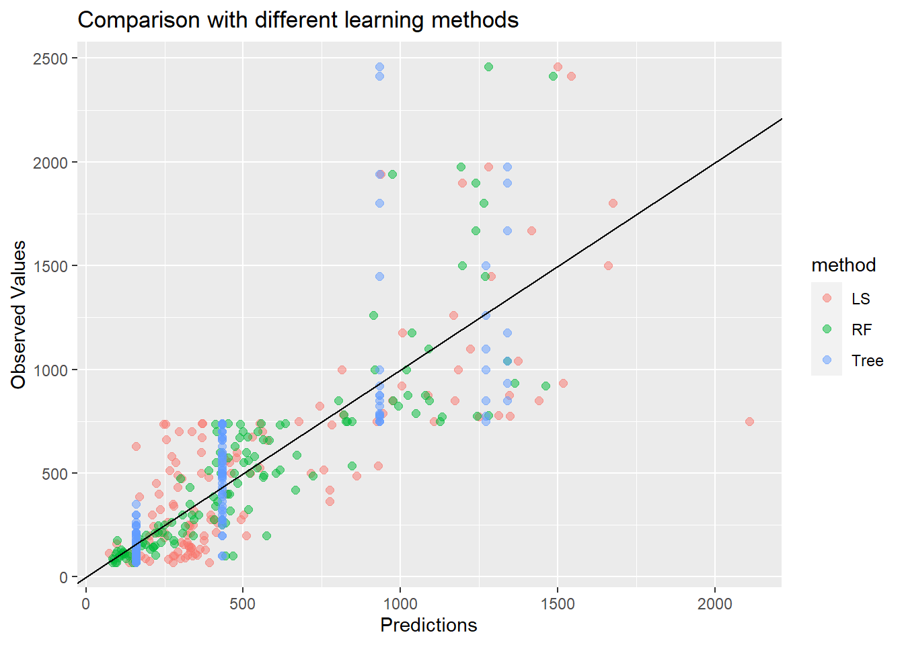
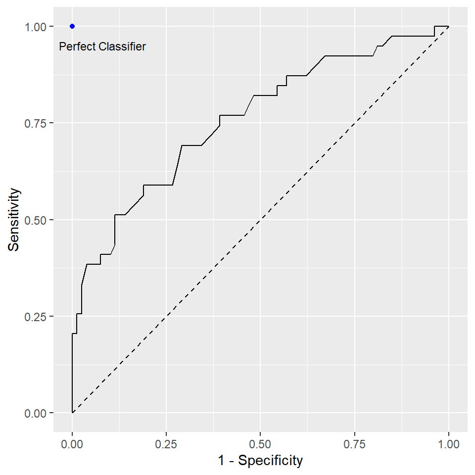

Chapter 19 Ensemble Methods
Reference: Ch8 in An introduction to Statistical Leraning with applications in R by James, Witten, Hastie and Tibshirani. For more details, study STAT457/ 462.
Package used:
Ensemble methods involve pooling together the predictions of a set of many models.
In this chapter, we illustrate this idea by pooling together many decision trees, resulting in a method called random forest.
However, it is important to note that ensemble method is a generally method that can be applied not only to tree-based methods but virtually any models. For example, you can combine the predictions from a neural network and a random forest. In fact, many of the winners of the machine-learning competitions on Kaggle use very large ensembles of models.
Remark: of course, to get a good performance, the weights used to combine the models should be optimized on the validation data.
The main idea of ensemble methods is to combine models that are as good as possible while being as different as possible.
Analogy: combining experts from different fields to solve a difficult problem is usually more effective than one single expert or a group of experts in the same field.
19.1 Bagging
Bagging = Bootstrap aggregation
- a general-purpose procedure for reducing the variance of a statistical learning method
Suppose we can compute a prediction \(\hat{f}(x)\) given data \(\{(x_i, y_i)\}^n_{i=1}\).
Bagging steps:
Sample with replacement \(n\) data from \(\{(x_i, y_i)\}^n_{i=1}\). Denote the resampled data to be \(\{(x^{(b)}_i, y^{(b)}_i)\}^n_{i=1}\).
Compute \(\hat{f}^{(b)}(x)\) using \(\{(x^{(b)}_i, y^{(b)}_i)\}^n_{i=1}\).
Repeat Step 1-2 \(B\) times to obtain \(\hat{f}^{(b)}(x)\) for \(b =1,\ldots,B\).
Final model is \[\begin{equation*} \hat{f}_{Bagging}(x) = \frac{1}{B} \sum^B_{i=1} \hat{f}^{(b)}(x). \end{equation*}\]
19.2 Random Forest
Bagging decision trees uses the same model and variables repeatedly. Thus, the models lack diversity. In fact, the bagged trees are highly correlated. To improve the prediction accuracy, we want to combine trees that are “different”.
Random forest includes a small tweak that decorrelates the trees used in the ensemble.
Ideas of random forest:
As in bagging, a number of decision trees are build on boostrapped training samples.
But when building these decision trees, each time a split in a tree is considered, only a random sample of \(m\) predictors is chosen as split candidates from the full set of \(p\) predictors.
A fresh sample of \(m\) predictors is taken each split.
In this way, the correlation between the predictions from the trees will be reduced because each tree is built using only a subset of predictors at each split.
Remark: when \(m = p\), random forest is the same as bagging decision tree.
19.3 Example
We will use the Hitters dataset from ISLR2 to illustrate how to perform random forest with the function randomForest() in the package randomForest.
Hitters <- na.omit(Hitters)
# split the dataset
set.seed(1)
index <- sample(nrow(Hitters), nrow(Hitters) * 0.5)
Hitters_train <- Hitters[index, ]
Hitters_test <- Hitters[-index, ]Fitting a random forest:
rf_fit <- randomForest(Salary ~., data = Hitters_train,
mtry = (ncol(Hitters_train) - 1)/ 3, ntree = 1000, importance = TRUE)Two important parameters:
mtry: Number of variables randomly sampled as candidates at each split. The default values for classification and regression are \(\sqrt{p}\) and \(p/3\), respectively.
ntree: Number of trees to grow. The default is \(500\). More trees will require more time.
Prediction:
Compared with least squares:
ls_fit <- lm(Salary ~., data = Hitters_train)
ls_pred <- predict(ls_fit, Hitters_test)
mean((Hitters_test$Salary - ls_pred)^2)
## [1] 93373.95Compared with one tree:
# Fit regression tree
tree_fit <- tree(Salary ~., Hitters_train)
# MSE in test data
tree_pred <- predict(tree_fit, Hitters_test)
mean((Hitters_test$Salary - tree_pred)^2)
## [1] 83073.2A plot showing the predictions by different methods and the corresponding observed values.
## [1] FALSE
Several observations:
The regression tree can only use a few distinct values as the prediction values (the number of such values equals the number of terminal nodes). Hence, you can see the blue points are all located at several vertical lines.
Linear regression can produce predictions with values depending on the features. Thus, the points will not lie on several vertical lines.
The closer the points are to the diagonal line, the better the predictions are. For observed values that are small, random forest is doing a much better job than linear regression.
Variable Importance Plot
Random forest typically improves the accuracy over predictions using a single tree. However, it can be difficult to interpret the resulting model, losing the advantage of using a decision tree.
On the other hand, one can still obtain an overall summary of the importance of each feature using the RSS (for regression problems) or the Gini index (for classification problems). Basically, we can record the total amount that the measure (RSS or Gini index) decreases due to splits over a given predictor, averaged over all \(B\) trees. A large value indicates an important predictor. This importance measure is given in the second column of importance(rf_fit).
importance(rf_fit)
## %IncMSE IncNodePurity
## AtBat 3.35182212 524974.45
## Hits 1.13094383 611669.31
## HmRun 2.85844392 631697.80
## Runs 2.65375662 712993.07
## RBI 0.91376847 858711.10
## Walks 5.10158070 938898.67
## Years 5.38718804 295859.22
## CAtBat 12.34565397 1501003.50
## CHits 12.66787049 1861108.04
## CHmRun 4.50720662 1086255.87
## CRuns 13.31276946 2103022.87
## CRBI 11.11503712 2101151.04
## CWalks 9.40813964 1447656.21
## League 0.57926429 20002.08
## Division 2.04714437 45064.15
## PutOuts 3.67103105 296237.51
## Assists -0.26947886 152545.23
## Errors -0.07960768 142009.27
## NewLeague 0.11678271 23564.81
## High 29.37244111 7814171.92Visualizing the importance of the features:
